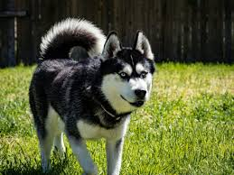
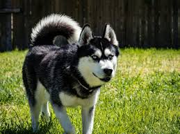

I love dogs!
Pictures of the dogs that I particularly like
 

Though I have some preference over the appearance of some breeds, I don't care much about the specific breeds of dogs; what matters to me is their personality and well-being. I dislike when people create dog breeds that are genetically unhealthy, as it can cause suffering for the animals.